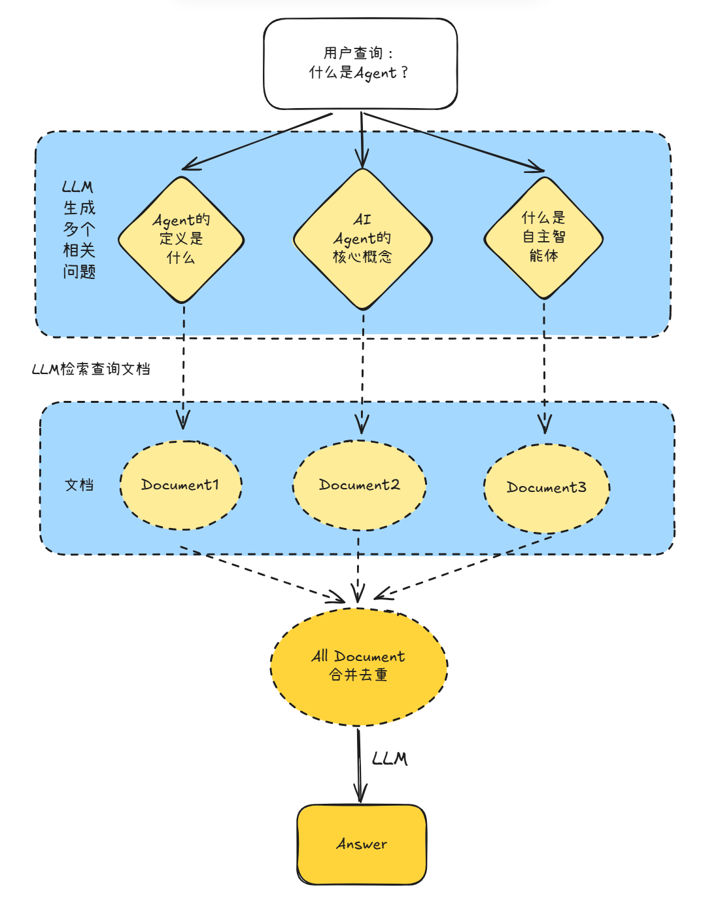
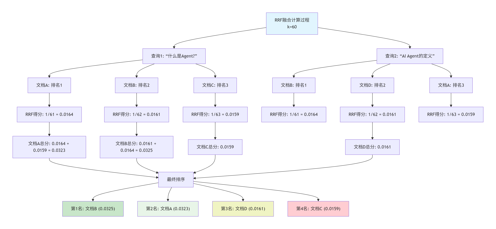
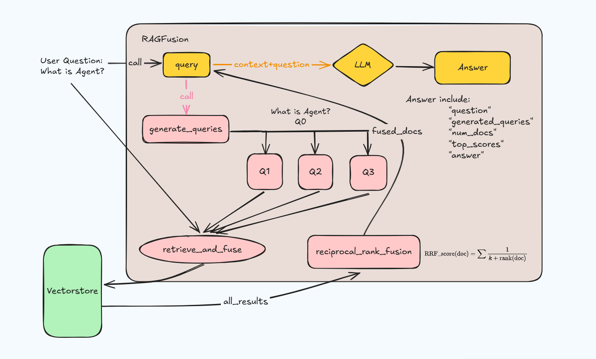
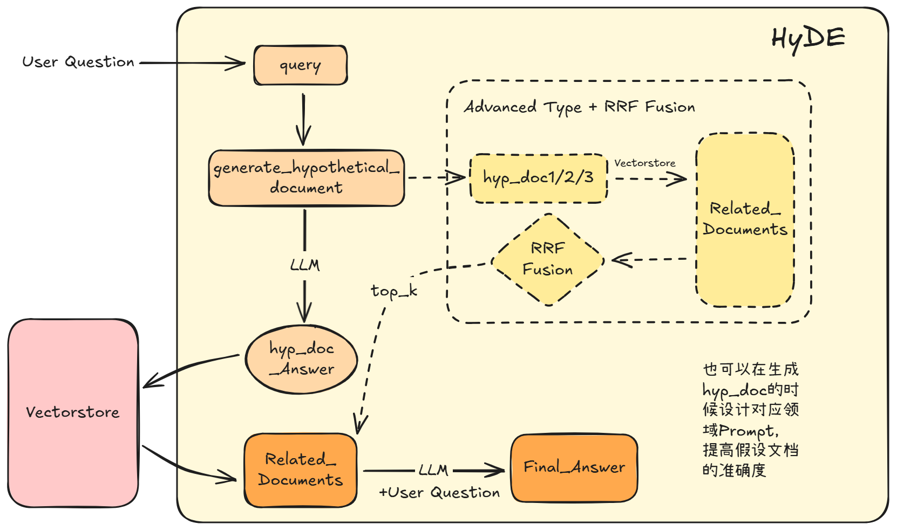

查询优化的必要性
在基础的RAG系统中，我们均使用单一查询检索。但是通常在实际运用中，用户的查询往往存在表达模糊、角度单一或是过于笼统，这就很容易错过很多有用的信息。
查询优化和核心思想
通过生成多个角度的查询、重写查询或分解复杂查询，增加检索到相关文档的概率。
例如
原始查询：“什么是多模态大模型”
生成的变体：
1.“多模态大模型的应用”
2.“多模态大模型的厂商有哪些”
3.“如何做一个多模态大模型”
其主要流程是 用户输入查询 → 生成问题变体 → 检索 → 合并结果 → 去重 → 生成答案
查询技术总览
1 多角度查询 Multi-Query
通过LLM生成原始查询的多个变体，从不同角度检索文档，提高检索的召回率。

基础代码
from langchain_openai import ChatOpenAI
from langchain_core.prompts import ChatPromptTemplate
from langchain_core.output_parsers import StrOutputParser
# 定义查询生成提示词
query_gen_prompt = ChatPromptTemplate.from_messages([
("system", """你是一个AI助手，负责生成查询的多个变体。
给定一个用户查询，生成3个不同角度的相关查询。
每行一个查询，不要编号。"""),
("human", "{question}")
])
# 创建查询生成链
llm = ChatOpenAI(model="gpt-3.5-turbo", temperature=0.7)
query_generator = (
query_gen_prompt
| llm
| StrOutputParser()
| (lambda x: x.split("\n")) # 分割成列表
)
# 使用示例
original_query = "什么是Agent？"
queries = query_generator.invoke({"question": original_query})
print("原始查询:", original_query)
print("\n生成的查询变体:")
for i, q in enumerate(queries, 1):
print(f"{i}. {q}")
ChatPromptTemplate是说明书模版，用来构建Prompt。StrOutputParser可以将回答简化成我们想要的纯文字。query_gen_prompt = ChatPromptTemplate.from_messages([("system", "..."),("human", "...")])：是创建了一个模版，里面告诉模型system消息和human消息。query_generator相当于定义了一个问题组装机，用|符号（可以读作然后）将所有步骤串成了一条流水线。query_gen_prompt：当用户的原始问题进来时，根据上面的指令模板产出完整的Prompt。llm：将完整的Prompt传入llm让他生成多个相关问题，产出回复，但是回复有可能是这样的`AIMessage(content="Agent系统的定义和核心特征是什么？\nAI Agent与传统程序有什么区别？\nAgent在实际应用中如何工作？")```- 这时候就需要
StrOutputParser()出场了，将上面那个回复转换成纯文字内容，就变成了这样"Agent系统的定义和核心特征是什么？\nAI Agent与传统程序有什么区别？\nAgent在实际应用中如何工作？" lambda x: x.split("\n")：按换行符\n将上面那个长文本切开，变成一个列表，最终的输出就像这样python [ "Agent系统的定义和核心特征是什么？", "AI Agent与传统程序有什么区别？", "Agent在实际应用中如何工作？" ]
运行结果

优缺点
优点 ✅： - 提高召回率（找到更多相关文档） - 覆盖不同角度和表达方式 - 对用户表达不清的查询特别有效 - 实现相对简单
缺点 ❌： - 增加检索成本（多次查询） - 可能引入噪声（不相关的变体） - 需要额外的LLM调用 - 去重逻辑可能过滤掉有价值的文档
2 融合式检索 RAG-Fusion
RAG-Fusion结合了Multi-Query和倒数排序融合（Reciprocal Rank Fusion, RRF），不仅生成多个查询，还智能地合并和重排序结果。
倒数排序融合
$$\text{RRF_score(doc)} = \sum \frac{1}{k + \text{rank(doc)}}$$其中$k$为常数，通常为60；$\text{rank(doc)}$为文档在某个查询结果中的排名；$\sum$表示对所有查询结果求和。 下图为一个例子的具体演示

核心思想
模拟了一个“侦探团队”的工作流： 1. 头脑风暴 (Query Generation): 将一个问题拓展为多个不同角度的相关问题。 2. 分头行动 (Retrieval): 对每个问题都执行一次独立的向量检索。 3. 智能会审 (Fusion): 使用特定算法 (RRF) 合并所有检索结果，并进行重新排序。 4. 撰写报告 (Generation): 使用融合后的“最佳”上下文来生成最终答案。
完整代码
from typing import List, Tuple
def reciprocal_rank_fusion(
results: List[List],
k: int = 60
) -> List[Tuple[any, float]]:
"""
实现倒数排序融合
Args:
results: 多个查询的结果列表
k: RRF常数
Returns:
排序后的(文档, 分数)列表
"""
# 存储每个文档的融合分数
fusion_scores = {}
for docs in results:
for rank, doc in enumerate(docs):
# 使用文档内容作为唯一标识
doc_id = doc.page_content
# 计算RRF分数
if doc_id not in fusion_scores:
fusion_scores[doc_id] = {
'doc': doc,
'score': 0
}
# 累加分数
fusion_scores[doc_id]['score'] += 1 / (k + rank + 1)
# 按分数排序
sorted_docs = sorted(
fusion_scores.values(),
key=lambda x: x['score'],
reverse=True
)
return [(item['doc'], item['score']) for item in sorted_docs]
class RAGFusion:
"""RAG-Fusion系统"""
def __init__(self, vectorstore, llm, k: int = 60):
self.vectorstore = vectorstore
self.retriever = vectorstore.as_retriever(search_kwargs={"k": 5})
self.llm = llm
self.k = k
def generate_queries(self, question: str, n: int = 3) -> List[str]:
"""生成查询变体"""
prompt = ChatPromptTemplate.from_messages([
("system", f"""生成{n}个不同角度的查询变体。
要求：
1. 语义相关但表达不同
2. 覆盖不同角度
3. 每行一个查询"""),
("human", "{question}")
])
chain = prompt | self.llm | StrOutputParser()
queries_str = chain.invoke({"question": question})
queries = [q.strip() for q in queries_str.split("\n") if q.strip()]
return [question] + queries[:n]
def retrieve_and_fuse(self, queries: List[str]) -> List[Tuple[any, float]]:
"""检索并融合结果"""
all_results = []
print(f"🔍 执行 {len(queries)} 个查询...")
for i, query in enumerate(queries, 1):
docs = self.retriever.get_relevant_documents(query)
all_results.append(docs)
print(f" 查询{i}: 检索到 {len(docs)} 个文档")
# RRF融合
fused_results = reciprocal_rank_fusion(all_results, k=self.k)
print(f"✨ 融合后共 {len(fused_results)} 个唯一文档")
return fused_results
def query(self, question: str, top_k: int = 5) -> dict:
"""执行RAG-Fusion查询"""
# 1. 生成查询
queries = self.generate_queries(question)
# 2. 检索并融合
fused_docs = self.retrieve_and_fuse(queries)
# 3. 选择top-k
top_docs = fused_docs[:top_k]
# 4. 生成答案
context = "\n\n".join([
f"[分数: {score:.4f}]\n{doc.page_content}"
for doc, score in top_docs
])
answer_prompt = ChatPromptTemplate.from_messages([
("system", "基于以下按相关性排序的文档回答问题。"),
("human", "文档:\n{context}\n\n问题: {question}")
])
answer_chain = answer_prompt | self.llm | StrOutputParser()
answer = answer_chain.invoke({
"context": context,
"question": question
})
return {
"question": question,
"generated_queries": queries,
"num_docs": len(top_docs),
"top_scores": [score for _, score in top_docs],
"answer": answer
}
# 使用示例
rag_fusion = RAGFusion(vectorstore, llm, k=60)
result = rag_fusion.query("什么是Agent？")
print("\n生成的查询:")
for q in result["generated_queries"]:
print(f" - {q}")
print(f"\nTop-{result['num_docs']} 文档分数:")
for i, score in enumerate(result["top_scores"], 1):
print(f" {i}. {score:.4f}")
print("\n答案:")
print(result["answer"])
代码详解
def reciprocal_rank_fusion(
results: List[List],
k: int = 60
) -> List[Tuple[any, float]]:
"""
实现倒数排序融合
Args:
results: 多个查询的结果列表
k: RRF常数
Returns:
排序后的(文档, 分数)列表
"""
# 存储每个文档的融合分数
fusion_scores = {}
for docs in results:
for rank, doc in enumerate(docs):
# 使用文档内容作为唯一标识
doc_id = doc.page_content
# 计算RRF分数
if doc_id not in fusion_scores:
fusion_scores[doc_id] = {
'doc': doc,
'score': 0
}
# 累加分数
fusion_scores[doc_id]['score'] += 1 / (k + rank + 1)
# 按分数排序
sorted_docs = sorted(
fusion_scores.values(),
key=lambda x: x['score'],
reverse=True
)
return [(item['doc'], item['score']) for item in sorted_docs]
- 这一部分是RAGFusion的核心。
def reciprocal_rank_fusion( results: List[List], k: int = 60 ) -> ...:“这是一个函数声明 (def)。它定义了 RRF 算法。results是一个参数，其类型提示 (List[List]) 表明它是一个“列表的列表”（即多个排名列表）。k是RRF算法的常数参数，它有一个默认值60。-> ...是返回值类型提示。”- 对于
results中的每一个docs，使用文档内容作为唯一标识，之后计算RRF分数，之后按分数排序。 return [(item['doc'], item['score']) for item in sorted_docs]函数的返回值是一个元组(item['doc'], item['score'])，表示每个文档和其对应的分数。
- 再来看
class RAGFusion部分def __init__(self, vectorstore, llm, k: int = 60):“：这是构造函数 (Constructor)。当一个RAGFusion类的新实例被创建时，__init__方法会自动运行。self代表实例本身。它将传入的vectorstore和llm等依赖项赋值给实例属性 (Instance Attributes) (如self.vectorstore)。”def generate_queries(self, ...)：用来生成不同的问题变体。return [question] + queries[:n]：这个函数的返回值是用户提出的question+生成的n个变体问题。
def retrieve_and_fuse(self, ...)：这是检索与融合的编排方法。它迭代queries列表。在循环内部，self.retriever.get_relevant_documents(query)执行了多次向量检索。所有结果（一个列表的列表）被收集到all_results中。最后，它调用本代码最上面的reciprocal_rank_fusion函数，实现结果融合。”def query(self, question: str, top_k: int = 5) -> dict:：这是主公共接口方法。它按顺序编排了 RAG-Fusion 的整个工作流：- 生成 (Generate): 调用
self.generate_queries。 - 检索与融合 (Retrieve & Fuse): 调用
self.retrieve_and_fuse。 - 筛选 (Filter): 使用列表切片 (
[:top_k]) 获取融合后排名最高的 k 个文档。 - 生成 (Generate): 构建并调用第二个 LLM 链 (
answer_chain)，将context和question注入到提示中，以生成最终答案。 * 该方法返回 (return) 一个字典 (Dictionary)。这个字典封装了查询的最终结果 (answer) 以及所有相关的元数据 (Metadata)（如generated_queries），这对于调试和透明度非常有用。
- 生成 (Generate): 调用
具体流程

3 查询分解 Query Decomposition
对于复杂的多步骤问题，Query Decomposition将其分解为多个子问题，分别回答后再合成最终答案。有两种分解策略：递归分解（Answer Recursively） 和 并行分解（Answer Individually）
递归分解（Answer Recursively）

复杂问题: "比较GPT-3和GPT-4在多模态能力上的差异"
↓
子问题1: "GPT-3有哪些能力？"
↓ 检索 + 回答
答案1: "GPT-3主要是文本模型..."
↓
子问题2: "GPT-4有哪些新能力？" (基于答案1)
↓ 检索 + 回答
答案2: "GPT-4增加了图像理解..."
↓
综合答案: "GPT-3仅支持文本，而GPT-4..."
其核心思想是将问题分解成2-4个子问题，按顺序回答，回答完第一个子问题后，带着第一个子问题和其答案去解答第二个子问题，以此类推。回答完所有子问题后，综合所有的子问题和答案，再回答原问题。
完整代码
from langchain.chains import LLMChain
class RecursiveDecomposition:
"""递归查询分解"""
def __init__(self, vectorstore, llm):
self.vectorstore = vectorstore
self.retriever = vectorstore.as_retriever()
self.llm = llm
def decompose_query(self, question: str) -> List[str]:
"""分解复杂查询为子问题"""
decompose_prompt = ChatPromptTemplate.from_messages([
("system", """将复杂问题分解为2-4个简单的子问题。
要求：
1. 子问题应该按逻辑顺序排列
2. 每个子问题都应该是独立可回答的
3. 每行一个问题"""),
("human", "{question}")
])
chain = decompose_prompt | self.llm | StrOutputParser()
sub_questions_str = chain.invoke({"question": question})
sub_questions = [q.strip() for q in sub_questions_str.split("\n") if q.strip()]
return sub_questions
def answer_sub_question(
self,
question: str,
context: str = ""
) -> str:
"""回答单个子问题"""
# 检索相关文档
docs = self.retriever.get_relevant_documents(question)
doc_context = "\n\n".join([doc.page_content for doc in docs[:3]])
# 构建提示词
if context:
full_context = f"已知信息:\n{context}\n\n相关文档:\n{doc_context}"
else:
full_context = f"相关文档:\n{doc_context}"
answer_prompt = ChatPromptTemplate.from_messages([
("system", "基于提供的信息简洁地回答问题。"),
("human", "{context}\n\n问题: {question}")
])
chain = answer_prompt | self.llm | StrOutputParser()
answer = chain.invoke({
"context": full_context,
"question": question
})
return answer
def query(self, question: str) -> dict:
"""执行递归分解查询"""
print(f"📋 原始问题: {question}\n")
# 1. 分解问题
sub_questions = self.decompose_query(question)
print(f"🔍 分解为 {len(sub_questions)} 个子问题:")
for i, sq in enumerate(sub_questions, 1):
print(f" {i}. {sq}")
# 2. 递归回答
accumulated_context = ""
sub_answers = []
print("\n💡 逐步回答:")
for i, sq in enumerate(sub_questions, 1):
print(f"\n 子问题{i}: {sq}")
answer = self.answer_sub_question(sq, accumulated_context)
sub_answers.append(answer)
accumulated_context += f"\n\n问题{i}: {sq}\n答案: {answer}"
print(f" 答案: {answer[:100]}...")
# 3. 综合最终答案
final_prompt = ChatPromptTemplate.from_messages([
("system", "基于以下子问题和答案，综合回答原始问题。"),
("human", """原始问题: {question}
子问题和答案:
{sub_qa}
请给出完整的综合答案:""")
])
sub_qa = "\n\n".join([
f"Q{i}: {q}\nA{i}: {a}"
for i, (q, a) in enumerate(zip(sub_questions, sub_answers), 1)
])
chain = final_prompt | self.llm | StrOutputParser()
final_answer = chain.invoke({
"question": question,
"sub_qa": sub_qa
})
return {
"question": question,
"sub_questions": sub_questions,
"sub_answers": sub_answers,
"final_answer": final_answer
}
# 使用示例
decomp = RecursiveDecomposition(vectorstore, llm)
result = decomp.query("比较GPT-3和GPT-4在能力上的主要差异")
print("\n" + "="*60)
print("最终综合答案:")
print(result["final_answer"])
流程图

并行分解（Answer Individually）
 核心思想：将原问题分解成多个子问题，一起解答后再综合回答。
核心思想：将原问题分解成多个子问题，一起解答后再综合回答。
import asyncio
class ParallelDecomposition:
"""并行查询分解"""
def __init__(self, vectorstore, llm):
self.vectorstore = vectorstore
self.retriever = vectorstore.as_retriever()
self.llm = llm
def decompose_query(self, question: str) -> List[str]:
"""分解查询（同上）"""
# ... 相同的实现
pass
async def answer_sub_question_async(self, question: str) -> str:
"""异步回答子问题"""
docs = await self.retriever.aget_relevant_documents(question)
doc_context = "\n\n".join([doc.page_content for doc in docs[:3]])
answer_prompt = ChatPromptTemplate.from_messages([
("system", "基于文档简洁回答问题。"),
("human", "文档:\n{context}\n\n问题: {question}")
])
chain = answer_prompt | self.llm | StrOutputParser()
answer = await chain.ainvoke({
"context": doc_context,
"question": question
})
return answer
async def query_async(self, question: str) -> dict:
"""异步执行并行分解"""
# 1. 分解问题
sub_questions = self.decompose_query(question)
# 2. 并行回答所有子问题
tasks = [
self.answer_sub_question_async(sq)
for sq in sub_questions
]
sub_answers = await asyncio.gather(*tasks)
# 3. 综合答案（同递归版本）
# ...
return {
"question": question,
"sub_questions": sub_questions,
"sub_answers": sub_answers,
"final_answer": final_answer
}
# 使用
parallel_decomp = ParallelDecomposition(vectorstore, llm)
result = asyncio.run(
parallel_decomp.query_async("Python vs JavaScript in Web Development")
)
这段代码用到了很多异步执行
* async def answer_sub_question_async(self, question: str) -> str:：这是一个协程函数 (Coroutine Function) 的声明（使用 async def）。它是一个可以被暂停和恢复的特殊函数。当它被调用时，它返回一个协程对象 (Coroutine Object)，这个对象必须被‘驱动’（如被 await）才能执行。
* docs = await self.retriever.aget_relevant_documents(question)：这是一个await 表达式。它用于暂停当前协程 (answer_sub_question_async) 的执行，直到 self.retriever.aget_relevant_documents() 这个可等待对象 (Awaitable) 完成。aget... 是 get... 的异步版本。在等待期间，事件循环 (Event Loop) 会切换去执行其他已就绪的协程。
* answer = await chain.ainvoke(...)：这是第二次 await。协程再次暂停，等待 chain.ainvoke (LLM链的异步调用) 完成。这展示了 asyncio 的核心优势：在一个协程的生命周期中，可以多次在I/O密集型操作（如数据库查询、API调用）上‘让出’控制权。
* async def query_async(self, question: str) -> dict:：这是主协程函数，它负责编排整个并行工作流。
* tasks = [ self.answer_sub_question_async(sq) for sq in sub_questions ]：这是一个列表推导式 (List Comprehension)。它不会执行协程，而是创建了一个协程对象 (Coroutine Object) 的列表。此时，这些协程尚未开始执行；它们只是被“实例化”了，准备被调度。
* sub_answers = await asyncio.gather(*tasks)：这是并发执行 (Concurrent Execution) 的核心。asyncio.gather() 函数接收一个或多个可等待对象 (*tasks 使用“解包”操作符将 tasks 列表中的所有协程对象作为独立参数传入)。gather 会并发地调度所有这些协程在事件循环上运行。await 在这里会暂停 query_async，直到 tasks 列表中的所有协程都执行完毕。sub_answers 将是一个列表，其顺序与 tasks 列表的顺序一一对应。
* asyncio.run( parallel_decomp.query_async(...) )：这是启动异步事件循环的入口点。asyncio.run() 函数负责创建和管理事件循环，运行传入的主协程 (query_async(...)) 直到它完成，然后关闭事件循环。这是在顶层（非 async 函数中）启动异步代码的标准方式。
图解

4 抽象化提问 Step Back Prompting
Step Back Prompting先提出一个更抽象、更概括的问题，获取背景知识后，再回答原始具体问题。
# ❌ 直接回答可能缺乏背景
原始问题: "为什么特斯拉（Tesla）的股价在2020年涨了这么多？"
直接检索 → 可能会得到孤立的、零碎的答案，例如：“因为财报好”、“因为被纳入了标普500指数”、“因为Model 3销量高”。（这些是事实，但没有解释清楚为什么市场反应如此剧烈。）
# ✅ Step Back后
Step 1: Step Back问题 "影响电动汽车（EV）行业公司估值的关键因素有哪些？"
Step 2: 获取背景知识 "EV公司的估值不仅受当前盈利能力的影响，还受**未来增长预期**、**技术壁垒**（如电池技术和自动驾驶）、**政府政策**（如碳排放积分和补贴）以及**市场情绪（叙事）**的强烈驱动。"
Step 3: 结合背景回答原始问题 "特斯拉在2020年的股价飙升，不能仅看作是单一事件（如纳入标普500）的结果。
完整代码
class StepBackRAG:
"""Step Back提示的RAG系统"""
def __init__(self, vectorstore, llm):
self.vectorstore = vectorstore
self.retriever = vectorstore.as_retriever()
self.llm = llm
def generate_step_back_question(self, question: str) -> str:
"""生成Step Back问题"""
step_back_prompt = ChatPromptTemplate.from_messages([
("system", """给定一个具体问题，生成一个更抽象、更概括的问题。
示例：
具体问题: "GPT-4的上下文长度是多少？"
Step Back问题: "GPT-4的主要技术特性有哪些？"
具体问题: "Python中的装饰器如何工作？"
Step Back问题: "Python中的元编程概念是什么？"
"""),
("human", "具体问题: {question}\nStep Back问题:")
])
chain = step_back_prompt | self.llm | StrOutputParser()
step_back_q = chain.invoke({"question": question})
return step_back_q.strip()
def query(self, question: str) -> dict:
"""执行Step Back RAG"""
print(f"❓ 原始问题: {question}")
# 1. 生成Step Back问题
step_back_q = self.generate_step_back_question(question)
print(f"📚 Step Back问题: {step_back_q}")
# 2. 检索背景知识（Step Back问题）
background_docs = self.retriever.get_relevant_documents(step_back_q)
background = "\n\n".join([doc.page_content for doc in background_docs[:2]])
# 3. 检索具体信息（原始问题）
specific_docs = self.retriever.get_relevant_documents(question)
specific = "\n\n".join([doc.page_content for doc in specific_docs[:2]])
# 4. 结合两者生成答案
answer_prompt = ChatPromptTemplate.from_messages([
("system", """基于提供的背景知识和具体信息回答问题。
先理解背景，再回答具体问题。"""),
("human", """背景知识:
{background}
具体信息:
{specific}
原始问题: {question}
请回答:""")
])
chain = answer_prompt | self.llm | StrOutputParser()
answer = chain.invoke({
"background": background,
"specific": specific,
"question": question
})
return {
"question": question,
"step_back_question": step_back_q,
"answer": answer
}
# 使用示例
step_back_rag = StepBackRAG(vectorstore, llm)
result = step_back_rag.query("GPT-4的最大上下文长度是多少个token？")
print("\n💡 答案:")
print(result["answer"])
5 假设性文档嵌入 HyDE
HyDE (Hypothetical Document Embeddings) 不直接检索用户查询，而是先让LLM生成一个假设性的答案文档，然后用这个文档去检索相似内容。
# 传统检索
用户查询: "艾菲尔铁塔什么时候开始建的？"
↓ 直接嵌入 （这个查询向量在语义上代表“艾菲尔铁塔”、“何时”、“建造”）
查询向量: `[0.8, -0.1, 0.6, ...]`
↓ 检索 （可能找到一篇关于“巴黎景点”或“艾菲尔铁塔观光”的文档，因为它们都包含“艾菲尔铁塔”，但不一定精确回答“何时建造”）
找到的文档: "艾菲尔铁塔是巴黎的象征，每年吸引数百万游客..."
# HyDE检索
用户查询: "艾菲尔铁塔什么时候开始建的？"
↓ LLM生成假设性答案** （LLM被要求“假设你是一个维基百科条目，回答这个问题”）
假设文档: "艾菲尔铁塔（La Tour Eiffel）的建造始于1887年1月28日，由工程师古斯塔夫·艾菲尔设计，作为1889年世界博览会的入口。建造过程历时两年..."
↓ 嵌入假设文档 （这个向量在语义上强烈代表“1887年”、“古斯塔夫·艾菲尔”、“世界博览会”等关键信息）
文档向量: `[0.3, 0.7, 0.4, ...]` # 这个向量与真正包含答案"1887年1月28日"的文档在语义上更相似！
↓ 检索
找到更相关的文档: "艾菲尔铁塔的建设工程启动于1887年1月28日，并于1889年3月31日完工..."
完整代码
class HyDERAG:
"""HyDE (Hypothetical Document Embeddings) RAG"""
def __init__(self, vectorstore, llm, embeddings):
self.vectorstore = vectorstore
self.llm = llm # 回答模型
self.embeddings = embeddings # 编码模型
def generate_hypothetical_document(
self,
question: str,
style: str = "academic"
) -> str:
"""生成假设性文档"""
if style == "academic":
system_msg = "你是一位专家。请对以下问题写一段详细、准确的学术性回答（200-300字）。"
elif style == "concise":
system_msg = "请对以下问题写一段简洁的回答（100-150字）。"
else:
system_msg = "请对以下问题写一段回答。"
hyde_prompt = ChatPromptTemplate.from_messages([
("system", system_msg),
("human", "{question}")
])
chain = hyde_prompt | self.llm | StrOutputParser()
hypothetical_doc = chain.invoke({"question": question})
return hypothetical_doc
def search_with_hyde(
self,
question: str,
k: int = 5
) -> List:
"""使用HyDE进行检索"""
# 1. 生成假设性文档
hyp_doc = self.generate_hypothetical_document(question)
print(f"📝 假设性文档:\n{hyp_doc[:200]}...\n")
# 2. 使用假设性文档检索
# 注意：这里用假设文档而不是原始查询
docs = self.vectorstore.similarity_search(hyp_doc, k=k)
return docs
def query(self, question: str, k: int = 5) -> dict:
"""执行HyDE RAG查询"""
print(f"❓ 原始问题: {question}\n")
# 1. HyDE检索
docs = self.search_with_hyde(question, k=k)
print(f"📚 检索到 {len(docs)} 个文档\n")
# 2. 生成最终答案
context = "\n\n".join([doc.page_content for doc in docs])
answer_prompt = ChatPromptTemplate.from_messages([
("system", "基于以下文档准确回答问题。"),
("human", "文档:\n{context}\n\n问题: {question}")
])
chain = answer_prompt | self.llm | StrOutputParser()
answer = chain.invoke({
"context": context,
"question": question
})
return {
"question": question,
"num_docs": len(docs),
"answer": answer
}
# 使用示例
hyde_rag = HyDERAG(vectorstore, llm, embeddings)
result = hyde_rag.query("解释Transformer架构中的注意力机制")
print("💡 最终答案:")
print(result["answer"])
流程示意

选择建议
这些技术可以组合使用以达到更好的效果